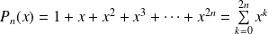

Sujet PC 2016-23 : Série entière
Le sujet est téléchargeable ci-dessous.
Le corrigé des questions mathématiques est de Cédric Faure, et les indices aussi ! Merci à lui.
Pour
 , et
, on pose
, et
, on pose

Question
1. À l'aide de l'ordinateur, tracer les courbes des fonctions
pour
et
 .
.
On utilisera la commande plt.axis([-2, 2, 0, 5]) afin de cadrer la fenêtre graphique.
Que remarquez-vous sur les lieux où atteint un minimum ?
En utilisant directement la relation de l'énoncé
import numpy as np
import matplotlib.pyplot as plt
def Pn(x, n):
res = 1
for k in range(1, 2 * n + 1):
res += pow(x, k)
return(res)
X = np.linspace(-2, 2, 1000)
for n in range(1, 11):
Y = [Pn(xi, n) for xi in X]
plt.plot(X, Y, label = 'P' + str(n))
plt.title('Courbes des fonctions Pn')
plt.legend(loc = 'lower right')
plt.axis([-2, 2, 0, 5])
plt.grid()
plt.show()
En simplifiant l'expression de Pn(x)
La fonction est obtenue par la somme de termes d'une série géométrique.
Donc pour , , et pour , .
def Pnsg(x, n):
if x == 1:
return(2 * n + 1)
else :return ((pow(x, 2 * n + 1) - 1) / (x - 1))
plt.figure(2)
for n in range(1, 11):
Y = [Pnsg(xi, n) for xi in X]
plt.plot(X, Y, label = 'P' + str(n))
plt.title('Courbes des fonctions Pn')
plt.legend(loc = 'lower right')
plt.axis([-2, 2, 0, 5])
plt.grid()
plt.show()
Question
2. Pour
et
 , montrer que
, montrer que
où est une fonction polynomiale à déterminer.
Pour , , donc ,
d'où l'expression cherchée en posant .
Question
3. Pour
, donner l'allure du tableau de variations de la fonction
. Montrer en particulier que
possède un minimum unique sur
 . Dans la suite, on notera
le réel où
atteint son minimum.
. Dans la suite, on notera
le réel où
atteint son minimum.
Par calcul,
. On en déduit les variations de
: croissante sur
, décroissante sur
 , et croissante sur
.
, et croissante sur
.
On calcule , et pour compléter l'étude du signe de . On en déduit que s'annule en un unique , et que admet un minimum en .
Question
4. Créer une fonction informatique A qui prend en argument un entier
et renvoie une valeur approchée de
.
On peut utiliser une dichotomie (dans la suite logique de la question précédente), ou utiliser les fonctions des modules, par exemple fsolve du module d'analyse numérique.
import scipy.optimize as resol
Utilisation de la fonction fsolve
Ce n'est pas trivial car fsolve attend en argument une fonction à un seul argument. On commence par définir la fonction un(x, n).
def un(x, n):
return (2 * n * pow(x, 2 * n + 1) - (2 * n + 1) * pow(x, 2 * n) + 1)
Puis on définit la fonction demandée en utilisant la fonction lambda pour générer à partir de un(x, n), une fonction à un seul argument.
def A(n):
return(resol.fsolve(lambda x : un(x, n), -1))
Question
5. Représenter graphiquement
en fonction de
 pour
. Que peut-on conjecturer sur la limite de cette suite ?
pour
. Que peut-on conjecturer sur la limite de cette suite ?
N = list(range(1, 500))
A = [A(ni) for ni in N]
plt.figure(4)
plt.title(r'Evolution du minimum de $P_n$')
plt.xlabel(r'$n$')
plt.ylabel(r'$a_n$')
plt.plot(N, A)
plt.grid()
plt.show()
Question
6. Déterminer un équivalent simple de la quantité puis, en exploitant la relation , en déduire la limite de la suite .
. Puisque est compris entre et , le second logarithme est borné, donc .
On sait que , donc , que l'on peut réécrire , ou encore .
On en déduit . Donc , donc .
Question
7. On pose maintenant
. Déterminer un équivalent de
lorsque
tend vers
 .
.
On sait que , donc .
L'équivalent trouvé à la question précédente donne
, donc
 .
.
Question
8. On pose . À l'aide d'une représentation graphique, conjecturer la nature de la série .
def wn(n):
return(A(n) + 1 - np.log(n)/(2 * n) - np.log(2) / n)
def Swn(n):
res = 0
for i in range(1, n + 1):
res += wn(i)
return(res)
N = list(range(1, 500))
SW = [Swn(ni) for ni in N]
plt.figure(5)
plt.title(r'Evolution de $\sum w_n$')
plt.xlabel(r'$n$')
plt.ylabel(r'$\sum w_n$')
plt.plot(N, SW)
plt.grid()
plt.show()
La série semble converger.